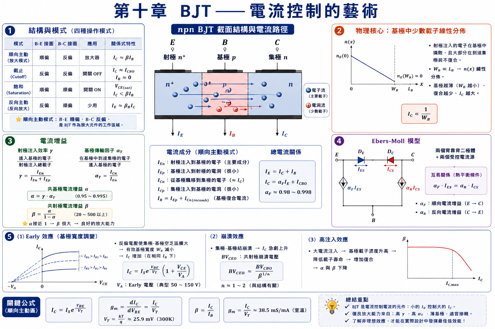
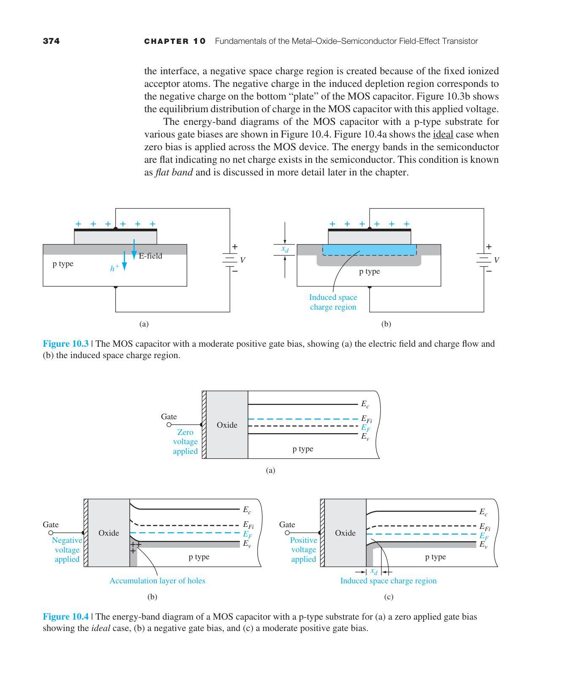
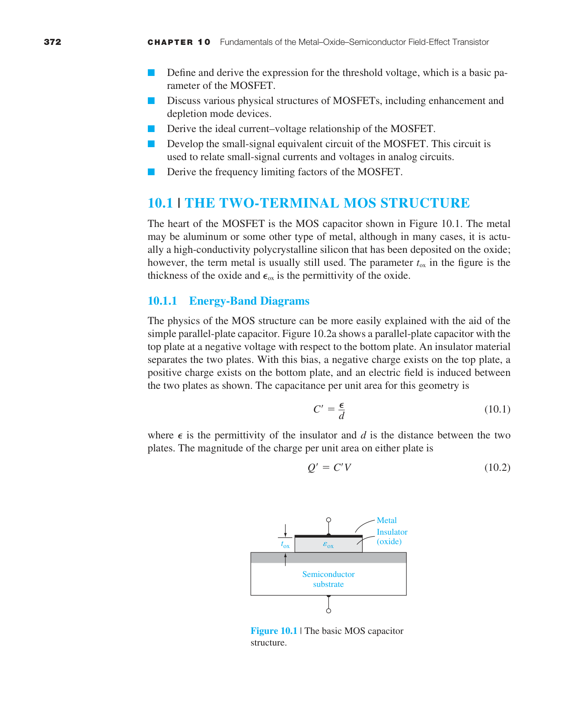
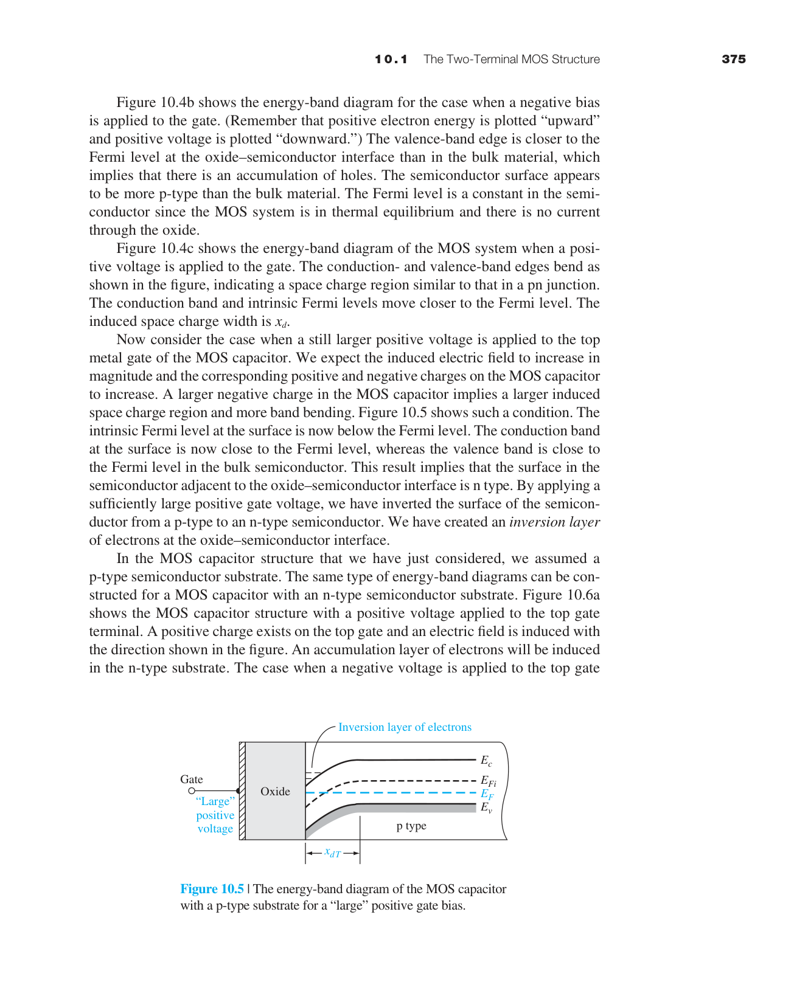
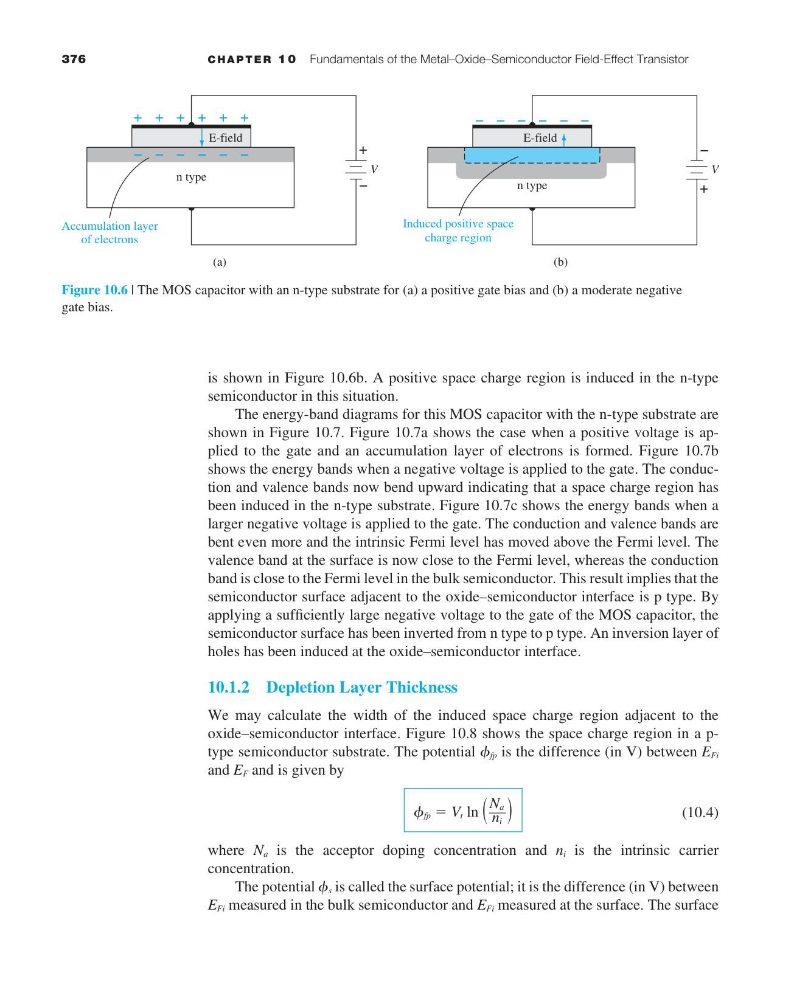
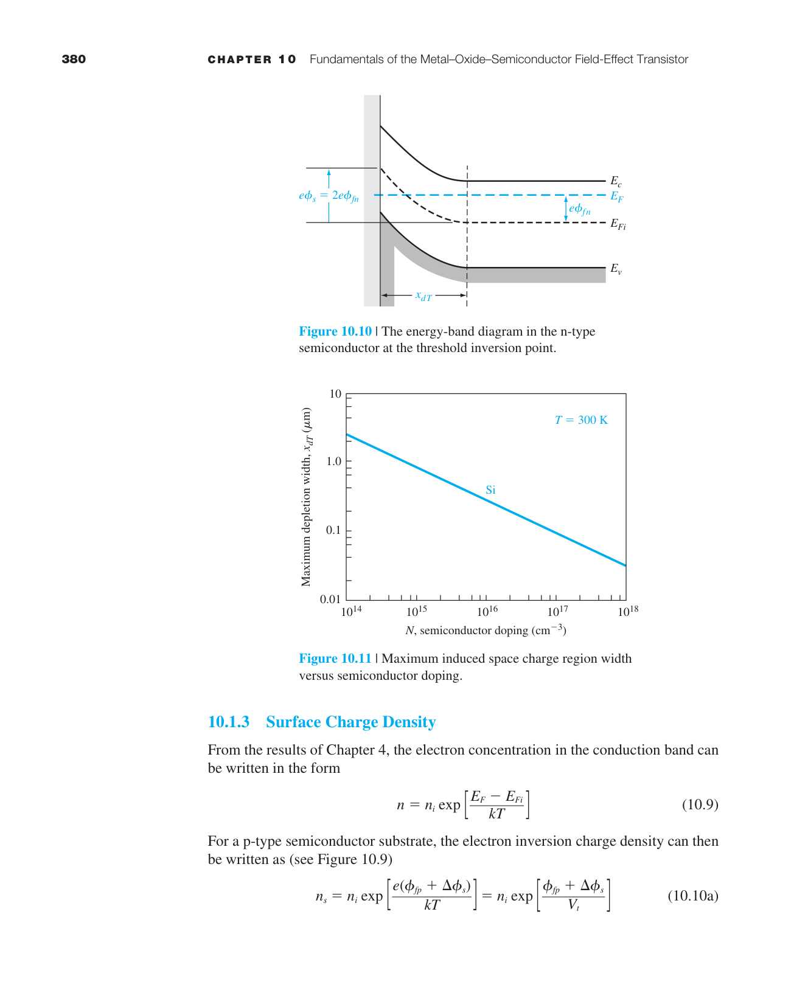
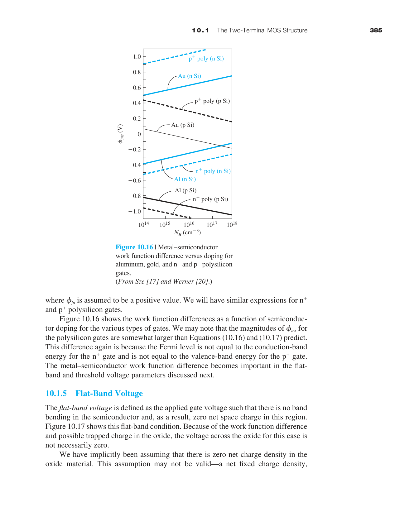
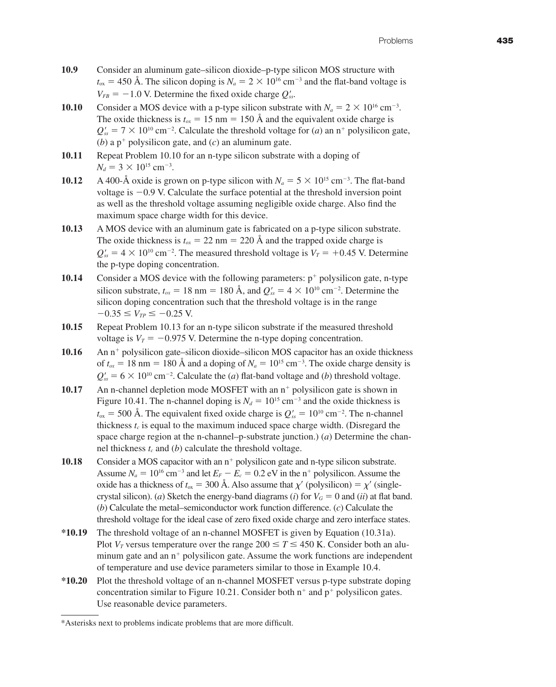
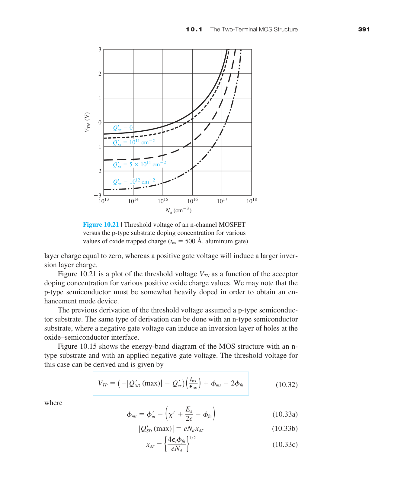

雙極性接面電晶體（BJT）
pn 接面二極體（第七、八章）是兩端元件——你只能控制它導通或不導通，無法實現放大。放大的本質是用小信號控制大信號。這需要第三個端點。
BJT 是第一個被發明的三端固態放大元件（1947 年，Bardeen、Brattain、Shockley）。它的基本結構是兩個 pn 接面背靠背放置，讓它們互相作用——一個接面注入少數載子，另一個接面收集它們。透過這種「注入→傳輸→收集」的機制，一個從基極流入的小電流 $I_B$（微安級）可以控制一個從集極流入的大電流 $I_C$（毫安級），實現電流放大。
雖然 MOSFET 後來取代 BJT 成為數位電路的主流，但 BJT 在類比領域（音頻放大器、射頻前端、電源管理）仍然佔有重要地位——它的跨導更高、匹配更好、雜訊更低。

10.1.1–10.1.3 BJT 的結構、電流關係、操作模式
從兩個二極體到一個電晶體

如果你只是把兩個 pn 二極體背靠背放在一起（p-n-p 或 n-p-n），而不讓它們的基極區域共用，你得到的只是兩個獨立的二極體——沒有放大功能。BJT 的奧妙在於：兩個接面共用同一個狹窄的基極區域。射極注入的少數載子跨過這個狹窄基極，被集極收集。基極寬度 $W_B$ 必須遠小於少數載子的擴散長度 $L_B$——這是 BJT 能夠放大的根本原因。

為什麼射極要重摻雜？射極的任務是注入大量電子到基極。重摻雜 n⁺ 射極確保射極電流中以電子為主（$\gamma\approx1$）——相較之下從基極注入射極的電洞很少。如果射極和基極摻雜相同，兩種載子的注入量相當→沒有淨放大。
為什麼基極要極窄？注入的電子在基極中是少數載子，會與多數載子（電洞）復合。如果基極太寬，大部分電子在到達集極前就復合了→沒有集極電流→沒有放大。$W_B \ll L_B$ 確保絕大多數電子存活並被收集。
為什麼集極要輕摻雜？集極的主要任務是收集電子，但 BC 接面的空乏區主要在輕摻雜側→輕摻雜的集極側承擔了大部分電壓降→提高了崩潰電壓（$V_{CE}$ 耐壓）。
四種操作模式
| 模式 | BE 接面 | BC 接面 | 物理行為 | 用途 |
|---|---|---|---|---|
| 順向主動 (Forward-active) | 順偏 | 逆偏 | 射極注入→基極傳輸→集極收集 | 線性放大器 |
| 截止 (Cutoff) | 逆偏 | 逆偏 | 兩個接面都不注入→$I_C\approx0$ | 數位 OFF |
| 飽和 (Saturation) | 順偏 | 順偏 | 兩個接面都注入→基極充滿過量載子 | 數位 ON |
| 反向主動 (Inverse) | 逆偏 | 順偏 | 集極當射極用→$\beta_R\ll\beta_F$ | 少用 |
在順向主動模式下，$V_{BE}\approx0.7$ V（順偏），$V_{BC}<0$（逆偏）。三個端點電流滿足 Kirchhoff 電流律：$I_E = I_B + I_C$。

12.1.4 BJT 放大原理——為什麼三端元件能放大？
BJT 能放大訊號的根本原因：用小的基極電流 $I_B$ 控制大的集極電流 $I_C = \beta I_B$。在共射極組態中，輸入加在 BE 端，輸出從 CE 端取出。
電壓放大：輸入端的 BE 接面是順偏二極體→小訊號電阻 $r_\pi = \beta/g_m$（通常幾 kΩ）。輸出端的 CE 之間有大電阻 $r_o = V_A/I_C$（通常幾百 kΩ）。電壓增益 $A_v = -g_m R_L$——輸入電阻低、輸出電阻高→用一個小的輸入電壓變化就能控制一個大的輸出電壓變化。
10.1.4 基極中少數載子的分布
這節是 BJT 物理的核心。基極中沒有電場（中性區）→注入的電子只能靠擴散移動。電子的穩態擴散方程為 $D_B\,d^2\delta n_B/dx^2 = \delta n_B/\tau_B$。
因為基極極窄（$W_B\ll L_B = \sqrt{D_B\tau_B}$），電子在基極中的傳輸時間遠短於復合時間→復合項可忽略→$d^2\delta n_B/dx^2\approx0$。這意味著電子濃度在基極中呈線性分布——這是 BJT 分析中最關鍵的簡化結果。
為什麼線性分布如此重要？① 擴散電流 $J_n = eD_B(dn/dx)$ 與梯度成正比。線性分布→梯度為常數→電流在整個基極中不隨位置變化→沒有載子在半路「消失」。② 梯度 $= \delta n_B(0)/W_B$→$I_C \propto 1/W_B$→基極越薄，電流越大。③ 這是「短二極體」近似（8.1.8）的直接應用——BJT 的基極本質上就是一個短二極體。

在 BE 接面邊界（$x=0$），Shockley 邊界條件給出：$\delta n_B(0)=n_{B0}(e^{V_{BE}/V_T}-1)$。在 BC 接面邊界（$x=W_B$），逆偏將所有到達的電子掃入集極→$\delta n_B(W_B)\approx0$。直線連接兩點→斜率為常數→擴散電流 $J_n=eD_B\,\delta n_B(0)/W_B$ 在整個基極中為常數。
10.2.1–10.2.2 電流增益的物理根源 ⭐

BJT 的電流放大本質上由兩個因子乘積決定：
射極注入效率 $\gamma$：「有用的 vs 浪費的」
射極電流 $I_E$ 有兩個成分：從射極注入基極的電子電流 $I_{nE}$（有用），和從基極注入射極的電洞電流 $I_{pE}$（浪費——這些電洞只在射極中與多數載子復合，對集極電流無貢獻）。
要使 $\gamma\to1$，分母中的修正項必須 $\ll1$。這要求：$N_E\gg N_B$（射極遠重於基極）、$W_B$ 小、$L_E$ 大（射極中電洞擴散長度大→電洞在射極深處復合而非在界面附近堆積）。這就是為什麼射極是 n⁺、基極是 p、且基極極窄的根本原因。
基極傳輸因子 $\alpha_T$：「活著到達 vs 半路復合」
射極注入的電子不會全部到達集極。有些在基極中與電洞復合。復合損失的比例取決於基極寬度與擴散長度的比值：
$W_B/L_B$ 越小→$\alpha_T$ 越接近 1。典型 BJT：$W_B\sim0.2$ µm，$L_B\sim10$ µm→$W_B/L_B\sim0.02$→$\alpha_T\approx0.9998$。
⭐ 共射極電流增益 $\beta$
$I_B$ 主要由兩部分組成：補充基極復合損失的電洞（$I_{rB}$），和從基極注入射極的浪費電洞電流（$I_{pE}$）。
$\alpha=0.99$→$\beta=99$；$\alpha=0.98$→$\beta=49$；$\alpha=0.995$→$\beta=199$；$\alpha=0.9$→$\beta=9$。
$\alpha$ 從 0.99 降到 0.98 僅有 1% 的變化，但 $\beta$ 從 99 降到 49——下降了 50%！這就是為什麼 BJT 電路不能假設 $\beta$ 是精確值——你必須透過負回授（射極電阻、集極回授）來穩定偏壓點。這也是為什麼 BJT 放大器通常設計為對 $\beta>\beta_{\min}$ 都能正常工作。
也是因為這個敏感性，MOSFET 在數位電路中取代了 BJT：MOSFET 的「增益」由 $g_m$ 決定，$g_m$ 對製程變異的敏感度遠低於 BJT 的 $\beta$。
10.2.3 Ebers-Moll 模型——BJT 的通用等效電路
Ebers-Moll 模型是 BJT 最通用的描述——兩個背靠背的二極體（代表 BE 和 BC 接面），加上兩個互相控制的電流源。它能夠預測 BJT 在所有四個操作模式下的行為，是 SPICE 中 BJT 模型的基礎。
等效電路的四個元件：
- BE 二極體：$I_F = I_{ES}(e^{V_{BE}/V_T}-1)$——BE 接面的順向電流。
- BC 二極體：$I_R = I_{CS}(e^{V_{BC}/V_T}-1)$——BC 接面的電流（順向或反向取決於偏壓）。
- $\alpha_F I_F$（受控電流源）：BE 電流中成功穿越基極到達集極的比例。$\alpha_F \approx 0.99$。
- $\alpha_R I_R$（受控電流源）：BC 電流中穿越基極到達射極的比例。$\alpha_R \ll \alpha_F$（因為集極設計不是為了高效注入）。

在順向主動模式（$V_{BE}>0$, $V_{BC}<0$）：$e^{V_{BC}/V_T}\approx0$→$I_C\approx\alpha_F I_{ES}e^{V_{BE}/V_T} = \alpha_F I_E\approx I_S e^{V_{BE}/V_T}$。這就是我們熟悉的指數關係。
在飽和模式（$V_{BE}>0$, $V_{BC}>0$）：兩個二極體都導通→$I_C = \alpha_F I_F - I_R$。$I_R$ 開始抵消 $\alpha_F I_F$→$V_{CE}$ 降得很低（$V_{CE,sat} \approx 0.1$–$0.2$ V）。飽和區中兩個接面都順偏→基極中儲存大量過量載子→開關延遲（第十三章）。
互易關係（reciprocity）：$\alpha_F I_{ES} = \alpha_R I_{CS}$——這不是巧合，而是半導體物理的自洽要求（來自二極體飽和電流的微觀定義）。這個關係減少了獨立參數的數量——Ebers-Moll 模型只需要 3 個獨立參數（$I_{ES}$, $\alpha_F$, $\alpha_R$）而非 4 個。
10.3 非理想效應
基極寬度調變與 Early 效應

在理想 BJT 中，$I_C$ 只取決於 $V_{BE}$，與 $V_{CE}$ 無關。但現實中 $V_{CE}$ 增加→BC 接面逆偏增加→BC 空乏區向基極側擴展→有效基極寬度 $W_B$ 變窄。
$W_B$ 變窄有兩個效應：① 電子濃度梯度 $\delta n_B(0)/W_B$ 變大→$I_C$ 增加。② 基極傳輸時間變短→$\alpha_T$ 輕微增大。兩者都使 $I_C$ 隨 $V_{CE}$ 增加而增加——這就是 Early 效應。

$V_A$（Early 電壓）的物理意義：$V_A$ 越大→$I_C$–$V_{CE}$ 曲線越平→輸出電阻 $r_o=V_A/I_C$ 越大→放大器增益越高。$V_A$ 取決於基極寬度——$W_B$ 越大，BC 空乏區的變化對 $W_B$ 的比例影響越小→$V_A$ 越高。但 $W_B$ 大也會降低 $\beta$（因 $\alpha_T$ 下降）。這是 BJT 設計中的經典取捨：$\beta$ vs $V_A$。
其他非理想效應
Webster 效應（高階注入）：當 $I_C$ 很大時，注入基極的電子濃度與基極多數載子電洞濃度可比（$\delta n_B\approx p_{B0}$）→為維持電中性，電洞濃度也必須增加→注入射極的電洞電流增大→$\gamma$ 下降→$\beta$ 隨 $I_C$ 增加而下降。
Kirk 效應（基極推擠）：在極高 $I_C$ 下，集極電流的空間電荷在 BC 空乏區中產生顯著的附加電場→空乏區向集極側移動→有效基極向集極延伸→$W_B$ 增加→截止頻率 $f_T$ 下降。
崩潰（Breakdown）：$V_{CE}$ 太高→BC 接面雪崩倍增→$I_C$ 急劇增大（與 pn 接面崩潰機制相同）。BJT 中崩潰電壓記為 $BV_{CEO}$（基極開路）或 $BV_{CBO}$（射極開路）。
12.4.6 崩潰電壓——BJT 的電壓天花板
BJT 有兩個關鍵的崩潰電壓指標：
$BV_{CBO}$（射極開路）：純粹是 BC 接面的雪崩崩潰電壓——與一個獨立的 pn 接面相同。取決於集極側的摻雜濃度 $N_C$：$N_C$ 越低→空乏區越寬→崩潰電壓越高。典型值：50–300 V。
$BV_{CEO}$（基極開路）：比 $BV_{CBO}$ 低得多。為什麼？因為在共射極組態中，雪崩倍增產生的額外電子被掃到集極→增加了 $I_C$→增加了 $I_B$（通過 $\beta$ 反饋）→進一步增加 $I_C$→正反饋迴路→在更低的電壓下就發生崩潰。
其中 $n$ 是雪崩倍增指數（通常 3–4 對 Si）。對 $\beta=100$，$n=4$：$BV_{CEO} \approx BV_{CBO}/100^{0.25} \approx BV_{CBO}/3.2$。所以一個 $BV_{CBO}=100$ V 的 BJT，$BV_{CEO}$ 只有約 30 V。
10.4 小訊號等效電路——混合-π 模型
在 DC 偏壓點 $(I_{CQ}, V_{CEQ})$ 附近，如果疊加一個小 AC 信號，BJT 的非線性指數關係可以線性化。這就是混合-π 模型（hybrid-π model）的由來。整個模型只有三個主參數，卻精確描述了 BJT 在低到中頻範圍內的所有小訊號行為。
$g_m$（跨導）——最核心的參數：$g_m = \partial I_C/\partial V_{BE} = I_{CQ}/V_T$。它告訴你 $V_{BE}$ 的微小變化能產生多大的 $I_C$ 變化：$i_c = g_m v_{be}$。室溫（$V_T=0.026$ V）：$I_C=1$ mA→$g_m=38.5$ mS。$I_C=10$ µA→$g_m=0.385$ mS。注意 $g_m\propto I_{CQ}$——偏壓電流直接控制增益。
$r_\pi$（輸入電阻）：$r_\pi = v_{be}/i_b = \beta/g_m = \beta V_T/I_{CQ}$。$I_C=1$ mA、$\beta=100$→$r_\pi=2.6$ kΩ。$r_\pi$ 是從基極看向射極的等效電阻。
$r_o$（輸出電阻）：$r_o = \partial V_{CE}/\partial I_C = V_A/I_{CQ}$。來自 Early 效應的有限輸出阻抗。$I_C=1$ mA、$V_A=100$ V→$r_o=100$ kΩ。
BJT：$g_m=I_C/V_T=38.5$ mS/mA（每毫安偏壓電流產生 38.5 mS 的跨導）。
MOSFET（飽和區）：$g_m=2I_D/(V_{GS}-V_{TH})$。同樣 1 mA：若 $V_{GS}-V_{TH}=0.2$ V→$g_m=10$ mS；若 $V_{GS}-V_{TH}=0.5$ V→$g_m=4$ mS。
BJT 的 $g_m$ 大了 4–10 倍。更大的 $g_m$→更大的電壓增益（$A_v=-g_m R_C$）、更低的輸入參考雜訊。這就是為什麼低雜訊放大器（LNA）、高速運算放大器輸入級、和射頻功率放大器仍然偏好使用 BJT（或 BiCMOS 製程中的 BJT 部分）。
但 BJT 有 $r_\pi$ 的負載效應（輸入阻抗有限）和基極電流的散粒雜訊——這在極高阻抗信號源應用中不利。
本章摘要
- BJT 結構：n⁺-p-n（或 p⁺-n-p）。射極重摻雜→$\gamma\approx1$；基極極窄（$W_B\ll L_B$）→$\alpha_T\approx1$；集極輕摻雜→高崩潰電壓。
- 順向主動模式：BE 順偏（注入）、BC 逆偏（收集）。$I_E=I_B+I_C$。
- 基極傳輸：$W_B\ll L_B$→無復合→少數載子線性分布→擴散電流 $J_n\propto1/W_B$。$W_B$ 越窄→$I_C$ 越大。
- 電流增益：$\alpha=\gamma\cdot\alpha_T$。$\beta=\alpha/(1-\alpha)$。$\alpha$ 的微小變化（1%）使 $\beta$ 劇烈波動（50%）。
- Ebers-Moll 模型：兩個背靠背二極體+耦合電流源。BJT 所有四種操作模式的統一描述。SPICE BJT 模型的基礎。
- Early 效應：$V_{CE}$ 調變 $W_B$→$I_C=I_Se^{V_{BE}/V_T}(1+V_{CE}/V_A)$。$r_o=V_A/I_C$。$W_B$ 大→$V_A$ 大但 $\beta$ 小→設計取捨。
- 小訊號混合-π 模型：$g_m=I_{CQ}/V_T$（BJT 的 $g_m$ 比 MOSFET 大 4–10×），$r_\pi=\beta/g_m$，$r_o=V_A/I_{CQ}$。